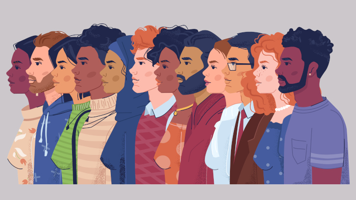
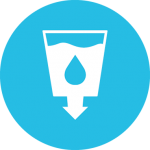

¿Qué es el ODS #6?
El Objetivo de Desarrollo Sostenible 1 busca erradicar la pobreza en todas sus formas para 2030, garantizando una vida digna para todos.
El problema global
La pobreza no solo implica falta de ingresos, sino también ausencia de acceso a servicios básicos, educación, salud y oportunidades para vivir con dignidad. Actualmente afecta a cientos de millones de personas en todo el mundo.
Nuestro compromiso
Combatir la pobreza es esencial para construir sociedades justas, inclusivas y sostenibles. Este objetivo busca garantizar que nadie se quede atrás en el desarrollo global.
Recursos y conocimiento
En este sitio encontrarás información relevante, datos actualizados y recursos prácticos para entender la magnitud del problema y cómo podemos contribuir desde diferentes ámbitos.
¿Quieres saber más sobre cómo ayudar?
Explora más sobre ODS 6